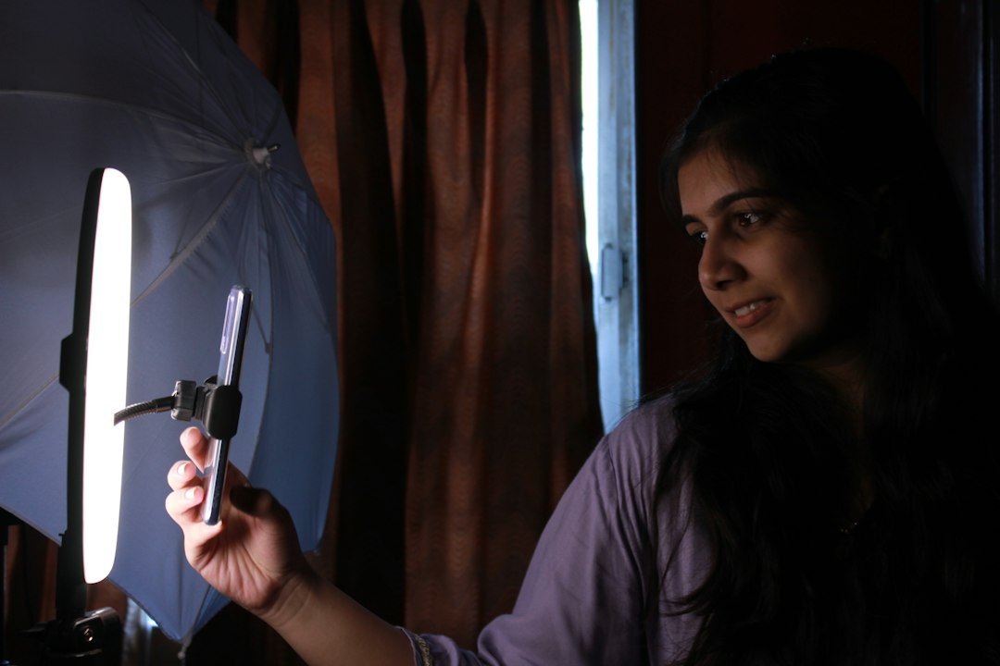

Automazione Video UGC: Come Vision UGC Riduce i Costi e Velocizza i Contenuti per E-Commerce e Marketing

Strategie di Automazione Video UGC per E-Commerce Manager, Media Buyer, Brand e Agenzie di Marketing
- Costi elevati e tempi lunghi penalizzano i processi di creazione video con creator umani.
- La mancata automazione comporta inefficienze operative e basso ritorno sugli investimenti.
- Vision UGC offre attori digitali iper-realistici e video personalizzati in 24 ore per rivoluzionare la produzione.
Analisi Approfondita della Notizia e delle Implicazioni Operative
Nel panorama competitivo dell’e-commerce e del marketing digitale, la produzione di contenuti video User Generated Content (UGC) è diventata una leva strategica imprescindibile per incrementare conversioni e coinvolgimento. Tuttavia, molti brand, agenzie di marketing e Media Buyer continuano a fare affidamento su processi manuali per la creazione di questi video, che prevedono la selezione, il brief e la gestione di creator umani, oltre a gestire spedizioni di campioni fisici e tempi di attesa significativi.
Questa realtà operativa non solo crea un notevole dispendio di risorse e budget aziendali, ma genera anche inefficienze che rallentano il time-to-market e rischiano di compromettere l’efficacia delle campagne pubblicitarie. La dipendenza da processi tradizionali appare quindi un elemento di forte svantaggio competitivo per chi vuole mantenere agilità e controllo sull’output creativo.
Le Conseguenze e i Costi di Non Agire
I costi associati all’utilizzo di creator umani per la produzione video UGC sono crescenti e insostenibili. Le tariffe per attori e influencer di qualità stanno aumentando, generando un impatto finanziario rilevante sui budget marketing. Inoltre, le tempistiche si allungano di settimane a causa della necessità di inviare prodotti fisici ai creator, gestire approvazioni e riprese non sempre in linea con le aspettative.
Il risultato spesso è la pubblicazione di video che non rispecchiano il branding o che garantiscono un basso ritorno sull’investimento (ROI), abbassando la capacità di conversione delle campagne digitali. Per brand e agenzie, questi fattori rappresentano colli di bottiglia operativi che rallentano la capacità di scalare le attività di marketing e rispondere tempestivamente ai trend di mercato.
Come Vision UGC Risolve il Problema
La soluzione più innovativa e pragmatica arriva da Vision UGC, SaaS sviluppato da RM Studio, che introduce nel settore un’inedita automazione per la produzione di video UGC grazie all’impiego dell’intelligenza artificiale Seedance 2.0. Questa tecnologia consente di generare attori e modelle digitali iper-realistici, capaci di recitare con dizione perfetta e naturale, producendo contenuti video personalizzati in sole 24 ore a partire da un semplice link del prodotto.
Vision UGC elimina completamente la necessità di inviare campioni fisici e di coordinare shooting con influencer umani, riducendo drasticamente tempi e costi. Questo permette ai professionisti del settore e-commerce, media buyer, brand e agenzie di concentrarsi su strategie di marketing e targettizzazione avanzata senza più subire i ritardi e le complessità operative tradizionali.
Tabella Comparativa: Gestione Tradizionale vs Vision UGC
| Aspetto | Gestione Tradizionale | Con Vision UGC |
|---|---|---|
| Costi | Elevati per creator umani, influenze e spedizioni | Starter Pack €50, Pro Bundle €120, soluzione scalabile |
| Tempi di produzione | Settimane di attesa per briefing, riprese e spedizione | Video pronti in 24 ore con AI e attori digitali |
| Scalabilità | Limitata da disponibilità e costi creator | Alta, senza limiti di produzione video |
| Qualità | Variabile, dipendente dall’interprete umano e riprese | Iper-realismo con seedance 2.0, dizione perfetta |
| Flessibilità creativa | Ristretta a contratti e tempistiche | Ampia, modifica e replica contenuti in tempo reale |
💡 Ti è stato utile questo approfondimento?
Condividilo con un collega o un amico del settore E-Commerce Manager, Media Buyer, Brand e Agenzie di Marketing a cui potrebbe interessare!
FAQ - Domande Frequenti per Professionisti del Settore
1. Quanto tempo impiega Vision UGC a fornire un video completo?
Vision UGC garantisce la produzione di video UGC iper-realistici entro sole 24 ore dalla ricezione del link del prodotto.
2. La qualità dei modelli digitali è comparabile a quella dei creator reali?
Grazie alla tecnologia Seedance 2.0, gli attori digitali generati sono iper-realistici con dizione perfetta e movimenti naturali, assicurando alta qualità e coinvolgimento.
3. Quali sono i costi associati all’utilizzo di Vision UGC?
È possibile scegliere tra lo Starter Pack a €50, ideale per testare la tecnologia, o il Pro Bundle a €120 con tre ganci creativi per campagne più strutturate.
Inizia Subito
Starter Pack a €50 o Pro Bundle (3 ganci creativi) a €120.
Fonti Ufficiali e Risorse Esterne
Scopri l'Intelligenza Artificiale per la tua attività
Ottimizza i processi e aumenta le vendite con le soluzioni B2B di RM Studio.
Scopri Vision UGC